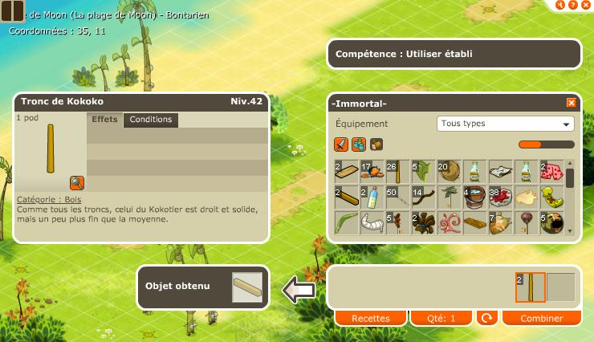

Menu barbok'you

Avant tout, il faudra au moins etre level 20 pour avoir casque et aile moon puis atterir sur l'ile grace au canon en 11/10. Une fois sur l'ile, allez voir Kib en 35/11. Prenez 5 peaux de larves orange avec vous sinon vous allez etre decu. |
|---|
Pour les 4 cordes, l'employé en 34/11 les vend pour 200k/u. demandez comment rentrer, puis insistez et achetez. |
|---|
 |
|---|
Allez dropper des troncs de kokoko, puis rendez vous à l'atelier devant kib en 35/11. Avc 2 troncs vous obtiendrez une poutre, avec un seul vous obtenez des planches, faites en 14 en tout ca sert pour aprés. (donc la vous devez avoir : 4 cordes, 1 poutre, 14 planches et il faut qu'il vous reste 1 tronc) |
Droppez une vingtaine de nodkoko, puis rentrer dans la jungle en 34/5. Droppez 16 koles dans jungle sur les trukikol. |
|---|
Pendant que vous etes dans la jungle allez en 32/4, Ortimus vous propose le calecon contre 5000k et les 5 peaux de larves que je vous avez dit de prevoir ! |
|---|
Ressortez de la jungle avec vos 16 koles, et rendez vous dans le bateau en 35/5 |
|---|
Le PNJ vous propose une bouteille de Rhum contre 2 planches + 1 kole, recuperez 6 rhum ! |
|---|
Droppez 10 kokoko et venez en 36/10. |
|---|
Un petit laby |
|---|
Dites vous que quand l'ile est apparue, il n'y avait pas de zaap et la quete qui permet aujourd'hui d'obtenir un Nomoon servait à partir de l'ile. Certains sont restés trés longtemps coincé... |
|---|
Le PNJ vous echange 1 toile ragoutante contre 10 noix de kokoko et 1 tonneau contre 1 rhum, recuperez 6 tonneaux. Ce PNJ permet aussi de recuperez une peinture noire pour la quete du masque kanniboule mais c'est une autre histoire que je vous conterai une autre fois. |
|---|
Ressortez et allez voir Kib qui a pas bougé en 35/11, lui montrer tout les objets reunis. |
|---|
On vous ramene en Amakna sur un magnifique radeau. |
|---|
Et un nouveau compagnon, bande de chanceux, si vous vous en occupez bien, il vous donnera 80 prospection, pour son regime alimentaire je vous laisse regarder dans la section : familier |
|---|
Dofus est un MMORPG édité par Ankama." Barbok " est un site non-officiel sans aucun lien avec Ankama.
Toutes les illustrations sont la propriété d'Ankama Studio et de Dofus. Le contenu de ce site a été rédigé initialement par Immortal, il ne s'agit que d'une remise en ligne effectuée par Eternal Games.